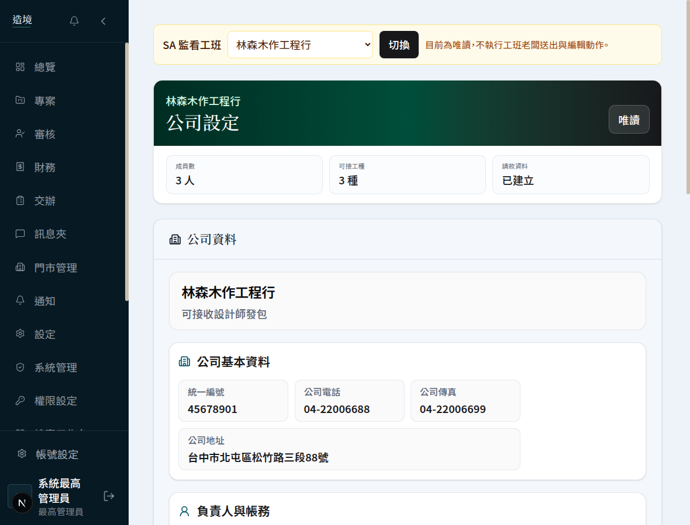
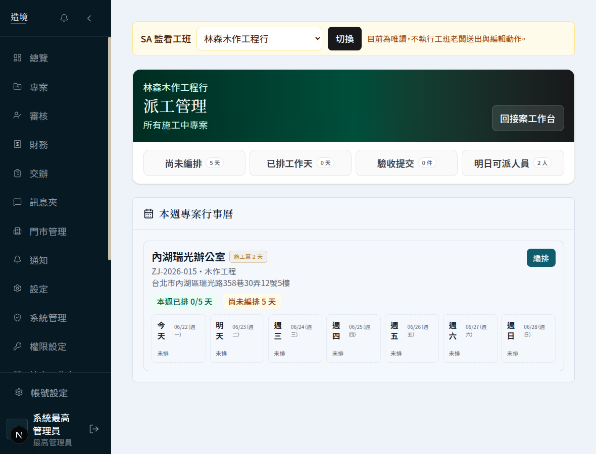
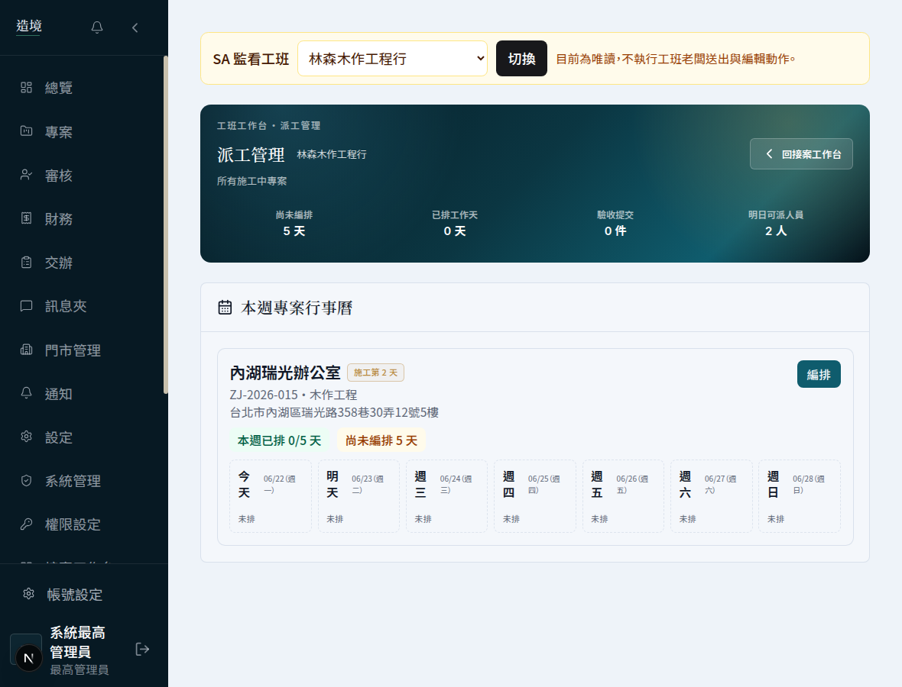
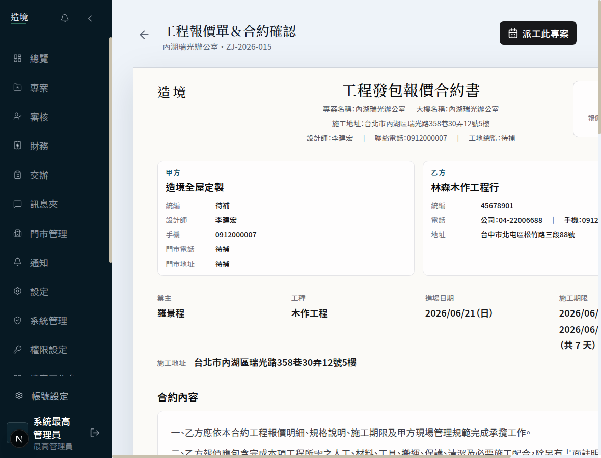

改版前 BEFORE
改版後 AFTER
01 · 工班公司設定
公司設定
工班老闆維護公司資料、收款帳戶、可接工種與常用報價的頁面。
改版前

改版後
改了什麼：頂部換成墨綠品牌橫幅，公司狀態與「成員數／可接工種／請款資料」關鍵數字一眼可見；資料改為清楚的分區清單，去掉重複的卡中卡。
02 · 現場排程
派工管理
工班老闆安排師傅每日進場、查看本週／本月專案行事曆的頁面。
改版前

改版後

改了什麼：「尚未編排／已排工作天／驗收提交／明日可派人員」四個數字變成頂部可點的篩選頁籤，數字更醒目；行事曆維持原本功能。
03 · 驗收
驗收紀錄
工班查看每個工項的驗收結果、需改善項目、並重新送驗的頁面。
改版前
改版後
改了什麼：頂部清楚標示驗收狀態（通過／改善），合約金額、工期、驗收人摘要化；每個工項的金額與驗收回覆層次更分明。
04 · 報價與合約
工程報價單 ＆ 合約確認
工班收到設計師詢價、確認單價與簽約的頁面。
改版前

改版後
改了什麼：頂部加上墨綠品牌橫幅與「已簽約」狀態、派工捷徑；正式合約文件本體維持原樣，確保可列印與法律完整性。